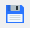
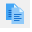
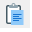
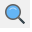
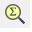
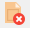
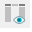

Retour
Accueil usine
Accueil agence
Prise en main
Requêtes (F2)

Sites Internet
|
|
Prise en main |
|
Objet : Présentation générale de l'environnement GENI, description des icones, des raccourcis clavier, ... Vous pourrez compléter vos connaissance avec les Diaporamas de présentation |
|
Connexion, démarrage de l'application |
|
|
Sur le bureau de Windows ou dans le menu démarrer, cliquer
sur l'icone de raccourci vers GENI : L'application s'ouvre et présente une boite de dialogue vous demandant de saisir votre compte et mot de passe GENI (Attention, ces informations sont différentes de votre login et mot de passe de connexion au réseau) Vous pouvez passer d'un champ à l'autre en appuyant soit sur Entrée, soit sur la touche tabulation.
Validez votre saisie en appuyant sur Entrée ou en cliquant sur Connexion. En cas d'erreur, ou si vous n'êtes pas reconnu par le système, un message apparaitra, contactez votre responsable en cas de problème de connection. |
|
Ecran d'accueil |
|
L'écran est divisé en plusieurs zone, de haut en bas :
|
Icones |
||
| version 2019 | ||
 |
Valider les changements (F5) Ce bouton permet de valider les changements effectués depuis la dernière validation. Ce n'est qu'après validation, que les modifications sont effectives, et accessibles pour tous les utilisateurs. |
|
| Liste des Valeurs (F4) Ce bouton permet d'afficher la liste de valeurs associées au champs courant. Si il n'existe aucune liste pour ce champ, un message le signale. Convention : Si le champ est de couleur bleue ou grise, alors celui-ci possède une liste de valeur. |
||
Ce bouton permet d'éditer une copie de l'écran courant sur l'imprimante par défaut de Windows. |
||
| Exporter Données Ce bouton permet d'exporter les données de la fenêtre active vers le fichier GEP_EXP.TXT, et d'exploiter celui-ci avec un logiciel bureautique (Word, Excel ...). |
||
| Annuler les changements Ce bouton permet d'Annuler tous les changements depuis la dernière validation. Attention, il n'est pas toujours possible d'utiliser ce bouton. |
||
| Couper du Texte (Ctrl + x) Ce bouton permet de couper la sélection courante et de la placer dans le presse-papiers de Windows. |
||
 |
Copier du Texte (Ctrl + c) Ce bouton permet de copier la sélection courante et la place dans le presse-papiers de Windows. |
|
 |
Coller du Texte (Ctrl + v) Ce bouton permet de coller le texte placé dans le presse-papiers de Windows suite à un couper ou un copier. |
|
 |
Entrer une Requête (F2) Ce bouton permet d'entrer une requête afin de sélectionner des enregistrements qui suivent un ou plusieurs critères précis. |
|
| Exécuter une Requête (Shift + F2) Ce bouton exécute la requête répondant aux critères saisis |
||
 |
Nombre d'occurrences d'une Requête
(Ctrl + F2) Ce bouton compte le nombre d'occurrences que ramènera la requête. |
|
| Insérer un enregistrement (F7) Ce bouton insère une ligne blanche sous l'enregistrement courant afin d'en insérer un nouveau. |
||
| Copier un Objet Ce bouton permet de copier un objet dans le presse-papiers GEPIX. Un objet GEPIX est constitué d'un enregistrement, et éventuellement de ces dépendances associées : Un Enregistrement d’Article, ainsi que ses Propriétés et ses Options. Nota : Le fait de Copier un objet dans le presse-papiers GEPIX ne supprime pas les précédents objets déjà présents dans celui-ci. |
||
| Coller un Objet (en
2019 fait copier et coller d'un objet) Ce bouton permet de coller un Objet du presse-papiers GEPIX. |
||
 |
Effacer un enregistrement (Shift + F12) Ce bouton permet d'effacer physiquement l'enregistrement courant de la base. |
|
| Appel Fiche de Base Ce bouton permet d'accéder directement à l'écran de Visualisation / Modification de la table associée au champ courant. |
||
Permet de visualiser le libelle des touches de fonction. |
||
| Aide (F1) Ce bouton appelle l'aide en ligne associée à l'écran courant. |
||
| Affichage des Préférences Ce bouton affiche la fenêtre de paramétrage utilisateur où celui-ci peut indiquer ses préférences (Ordre, Taille des Colonnes). Cette fonction n'est accessible que pour les écrans où la requête renvoie N enregistrements. |
||
 |
Elargir les Préférences Ce bouton permet d'afficher tous les champs, même ceux qui sont exclus par les préférences. |
|
| Quitter Ecran/Requête (F3 ou Alt + F4) Ce bouton permet de quitter l'écran Courant ou de passer du Mode Query en mode Normal. |
||
| GED - Gestion Electronique de Documents Accès à la Gestion Electronique des Documents. |
||
Touches de fonction / Raccourcis clavier |
|
| F1 | Aide en ligne (sur certains écrans) |
| F2 | Entrer une requête |
| Shift + F2 | Exécuter une requête |
| Ctrl + F2 | Compter le nombre d'enregistrements d'une requête |
| F3 | Quitter sans valider les changements |
| F4 | Liste de valeurs |
| F5 | Valider les changements |
| F7 | Insère une ligne pour créer un nouvel enregistrement |
| F12 | Dupliquer un enregistrement (la ligne entière juste au dessus) |
| Shift + F7 | Dupliquer un champ (la cellule juste au dessus) |
| Ctrl + E | Ouvrir la fenêtre de l'éditeur - Permet de
voir le détail d'un champ, des lignes cachées. Écrire un commentaire sur plusieurs lignes |
| Shift + F4 | Blanchir un enregistrement - Annuler la dernière action |
| Shift + F12 | Supprimer un enregistrement |
| Bas ou Shift + Bas |
Enregistrement suivant |
| Haut ou Shift + Haut |
Enregistrement précédent |
| Ctrl + P | Imprimer la fenêtre active |
| PG. Suiv | Afficher la page suivante (Enregistrements) |
| PG. Prec | Afficher la page précédente (Enregistrements) |
| F11 | Liste des touches de fonction |
Boutons spécifiques |
|
| Ctrl + 0 (sur le pavé numérique) | |
| Ctrl + 1, etc... (sur le pavé numérique) | |
| Rappel : le menu Touches
reprend l'intégralité des boutons |
|
|
Les touches de fonctions du
clavier F1, F2, à F12 Par exemple dans l'écran de Modif/Duplication de commande agence (F055A)
Les touches de fonctions correspondent a des fonctions valables dans tous les écrans de l'application Les boutons 0 à 9 correspondent à des fonctions spécifiques à chaque écran consulté. Si vous souhaitez utiliser un raccourci clavier pour ces boutons, vous devrez appuyer sur la touche Ctrl de votre clavier et sur l'un des chiffres du pavé numérique situé habituellement sur la droite de votre clavier. exemple dans l'écran cité ci-dessus Ctrl+3 permettra de copier la commande en cours. |
Raccourcis claviers Windows |
|
| Ctrl + c | Copier |
| Ctrl + x | Couper |
| Ctrl + v | Coller |
| Impr Ecran | Impression de l'écran (copie dans le presse papier) Très utile pour copier l'aperçu d'un écran dans votre éditeur de texte favoris (ex: Word) |
|

 Attention !
Attention !